본문콘텐츠영역
01About
Welcome to Iceland, the land of surreal landscapes and untamed Arctic beauty.
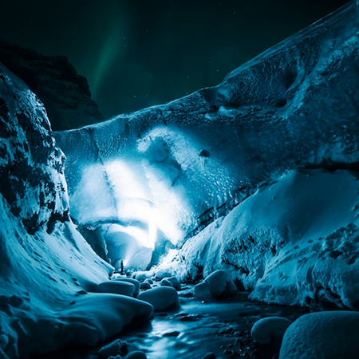
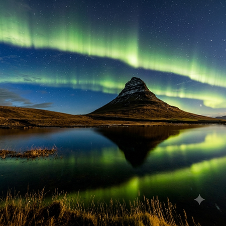
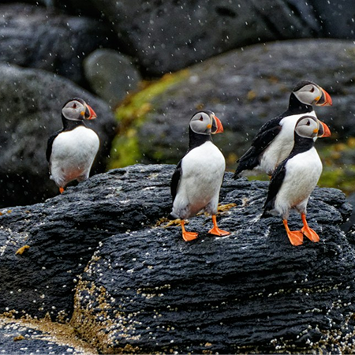
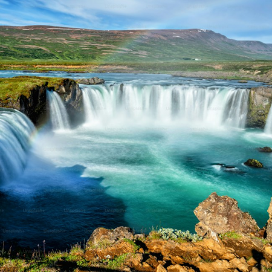
- ICELAND
-
Iceland's event calendar is filled with diverse festivals and activities year-round, celebrating music, art, and local culture. From vibrant summer town festivals to unique winter cultural experiences, the country offers unforgettable moments amid its dramatic seasonal shifts. Known as the Land of Fire and Ice, it is home to majestic glaciers, active volcanoes, and endless geothermal wonders. Whether you are chasing the magical Northern Lights or relaxing in natural hot springs, every corner reveals a breathtaking story.
From the roaring waterfalls and dramatic fjords of the North and West to the striking black sand beaches of the South, this extraordinary island constantly redefines the boundaries of nature.
-
Every landscape invites you to step into a living canvas, where raw volcanic power meets tranquil, untouched beauty.
Beyond its wild open spaces, Iceland is a realm where ancient folklore blends seamlessly with modern creativity. As you journey across sweeping lava fields,
peaceful fishing harbors, and vibrant coastal towns, you will encounter a rich culture shaped by resilience, myth, and deep harmony with the environment. It is not merely a destination to visit, but a transformative world waiting to be explored.
Driving along the endless horizon, you will find winding roads that lead straight into the heart of untouched wilderness. When twilight falls, the pristine skies offer a front-row seat to constellations and starry nights that feel entirely out of this world. Every mile traveled leaves an imprint on your soul, creating memories that linger long after you return home.
Discover the true essence of freedom as you wander through this majestic northern sanctuary.
Combining raw volcanic landscapes with a rich creative spirit,
Iceland invites travelers to explore its dramatic nature and vibrant traditions.
Discover how every region and season brings a unique
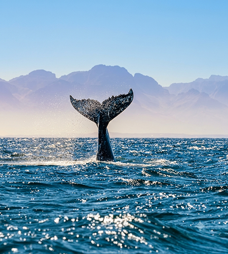
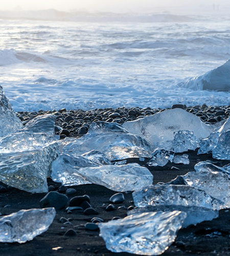
more
02AURORA
Experience the magical veil of the Northern Lights, a once-in-a-lifetime Arctic spectacle.
- A
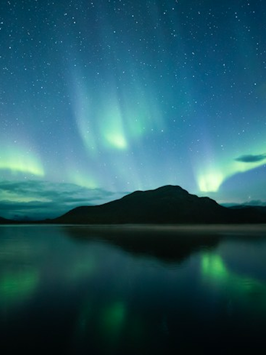
- U
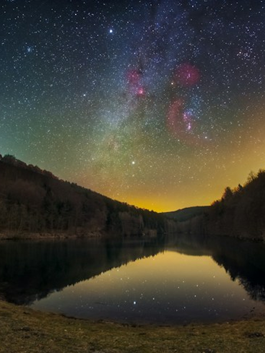
- R
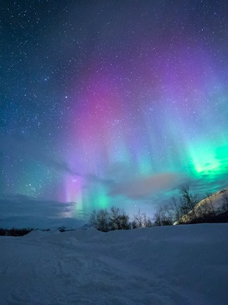
- O
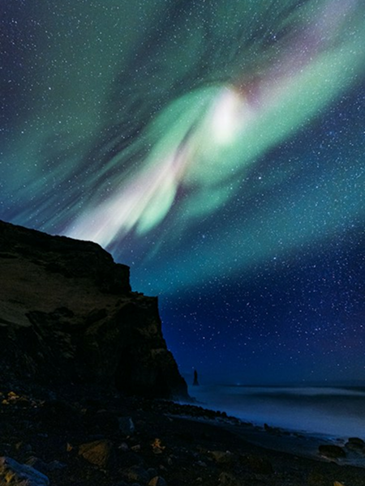
-
Beyond the horizon lies a breathtaking expanse of raw beauty and untouched wilderness,
where the silent, shimmering dances of the night sky awaken the deepest depths of the soul.
This is a meticulously curated archive dedicated to exploring the raw,
elemental spirit of Iceland—capturing the ethereal and mystical glow of the aurora as it breathes vibrant life
into the endless frozen dark, painting the Arctic cosmos with timeless wonder.
and echoing the ancient, untamed whispers of fire and ice across the edge of the world.
- R
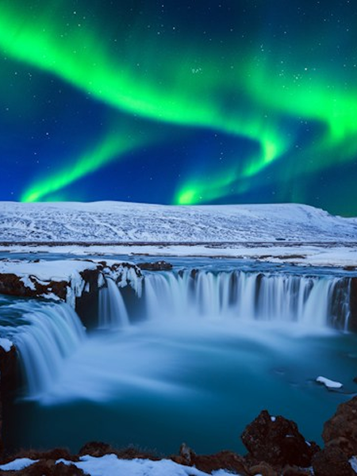
- A
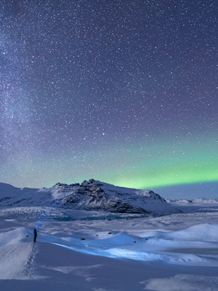
more
03REGIONS OF ICELAND
Explore the distinct spirits of Iceland, where every region tells a breathtaking story.
EAST : FJORDS & WILDERNESS
Experience the best of Iceland in March through the Icelandic Beer Festival,
the world-class Food and Fun Festival in Reykjavík,
and the snowy outdoor adventures of the Mývatn Winter Festival.
As winter gracefully transitions into spring, this enchanting month offers a unique blend of vibrant cultural celebrations
and breathtaking Arctic landscapes.
From tasting gourmet dishes crafted by international chefs using fresh local ingredients
to snowmobiling across frozen lakes under the dancing aurora, March in Iceland is a symphony of lively traditions and wild natural wonders.
Whether you are exploring the icy expanses of the North or enjoying the cozy, creative energy of the capital,
every moment invites you to embrace the extraordinary spirit of the North.
Let this unforgettable journey awaken your sense of wonder and deepen your connection with the Earth.
Pack your warmest layers and step into a realm where dreams and reality beautifully collide.
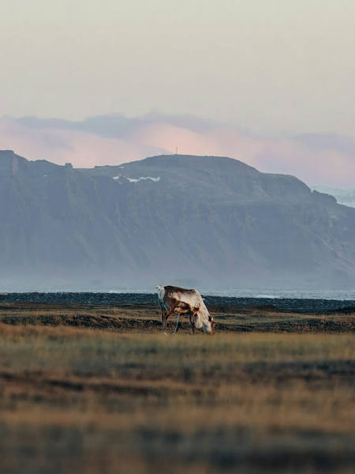
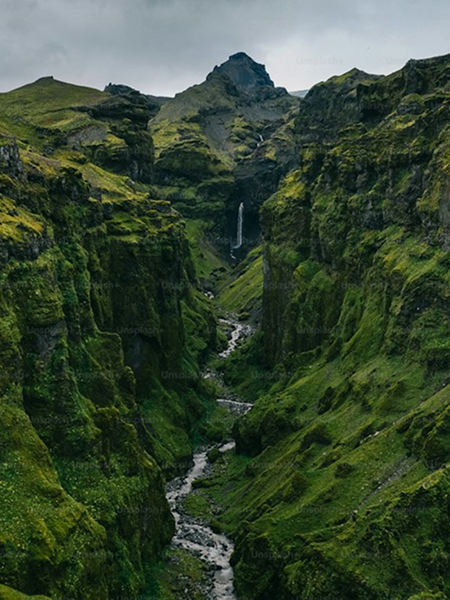
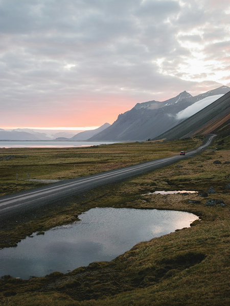
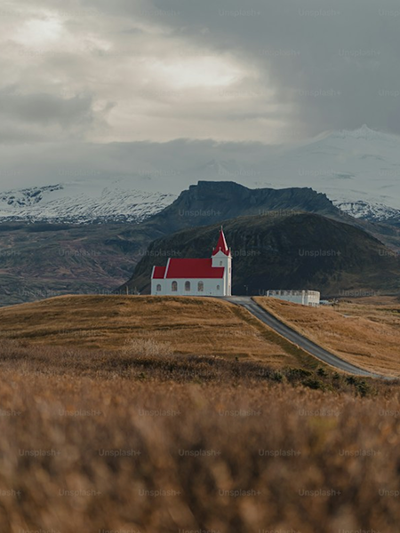
WEST : COASTAL CLIFFS & MYTHIC PENINSULAS
Uncover the raw coastal majesty of western Iceland, where dramatic sea cliffs, black sand shores,
and ancient volcanic craters whisper tales of Viking legends.
As winter gives way to spring, the mystical Snæfellsnes Peninsula awakens with crisp ocean breezes
and soaring seabird colonies nesting along sheer basalt columns.
From exploring legendary lava caves sculpted
by ancient fires to witnessing the rhythmic dance of the Atlantic waves against majestic mountains,
the West offers an intimate window into the islands primeval soul.
Whether you are wandering through historic fishing villages steeped in folklore or marveling at the quiet majesty of mist-shrouded fjords,
every step draws you deeper into timeless tranquility. Let the sweeping horizons of the West inspire
your imagination and ground your spirit in the quiet power of nature. Pack your spirit of discovery and embrace the untamed poetry of the western coast.
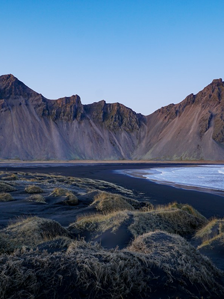
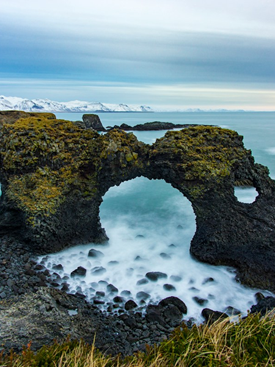
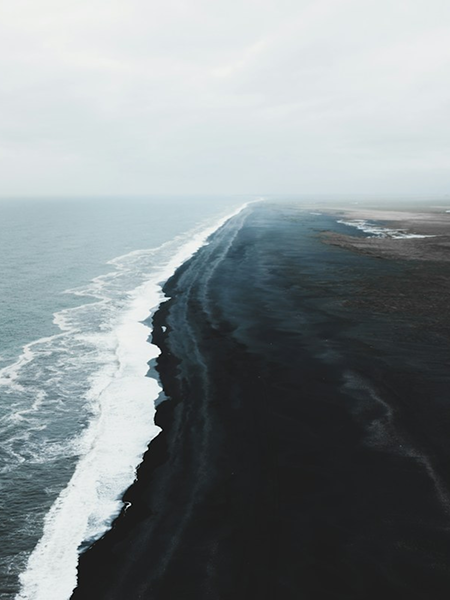
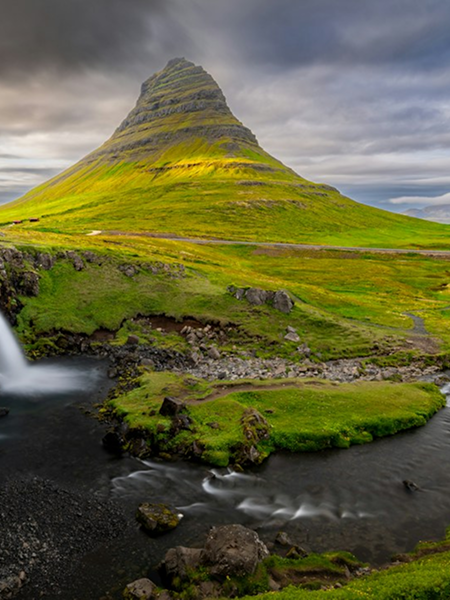
SOUTH : GLACIERS & WATERFALLS
Journey through the breathtaking realm of southern Iceland,
where colossal glaciers collide with roaring waterfalls and endless fields of emerald green.
As the seasonal shift breathes new life into the dramatic landscapes, the southern coastline reveals a mesmerizing
tapestry of roaring glacial rivers, towering ice caps into the horizon.
From walking behind the cascading veil of majestic waterfalls to witnessing floating icebergs drift peacefully in coastal lagoons,
the South is a living canvas of elemental wonder. Whether you are trekking across ancient ice expanses or
feeling the mist of thunderous falls against your face, every moment pulses with raw energy and breathtaking beauty.
Let this majestic corner of the island remind you of the earth's magnificent scale and enduring power.
Step into the warmth of southern hospitality and let the wild magic of the lowlands capture your heart.
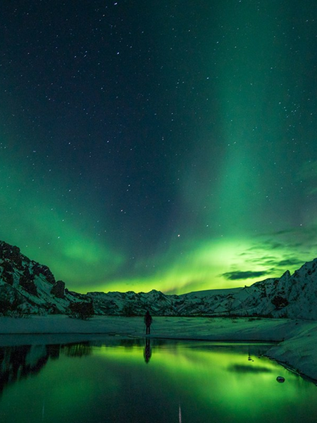
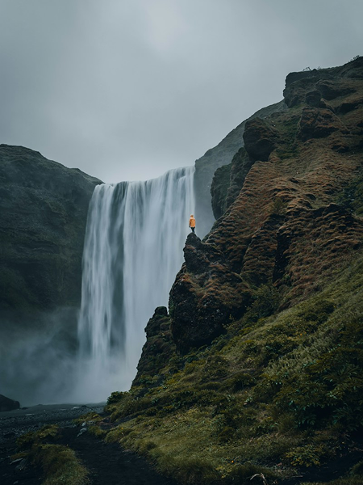
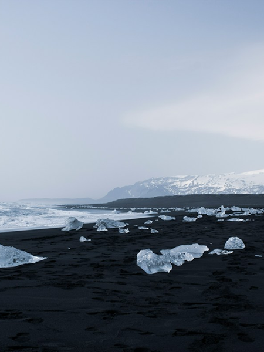
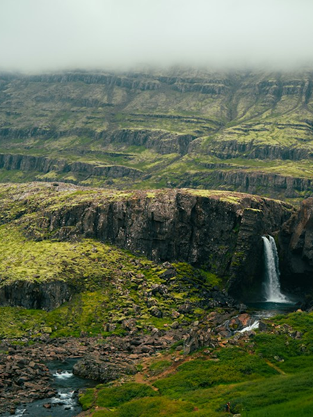
NORTH : ARCTIC WONDERS & GEOTHERMAL HAVENS
Venture into the dramatic northern frontiers of Iceland, where mystical geothermal fields,
thundering arctic waters, and endless winter snows create a truly otherworldly escape.
As March blankets the northern landscapes in pristine white, this snowy wonderland comes alive with thrilling
outdoor adventures, magical winter festivals aurora borealis.
From soaking in steamy geothermal nature baths amidst frosted landscapes to tracking the untamed beauty of
snow-capped volcanic valleys, the North offers an exhilarating blend of thrill and serenity.
Whether you are exploring the dramatic canyon carved by mighty rivers or cozying up in vibrant arctic towns
under starry polar skies, every experience echoes with the profound spirit of the far north.
Let the bracing arctic air clear your mind and awaken your deepest sense of adventure.
Embrace the silent majesty of the north and carry its timeless wonder home.
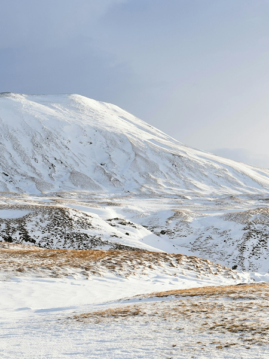
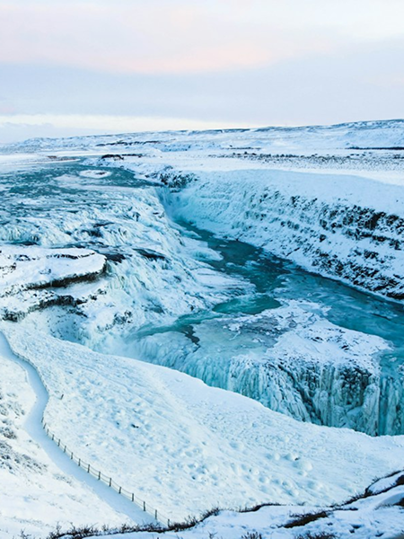
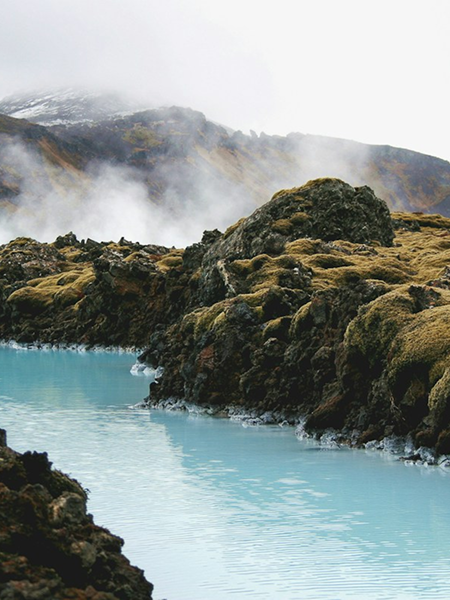
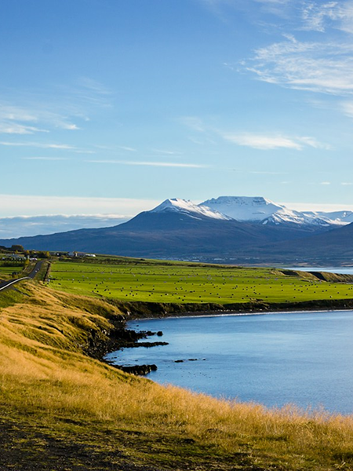
more
04ADVENTURE
Push your limits and discover the raw power of wild Iceland, the land of fire and ice.
-
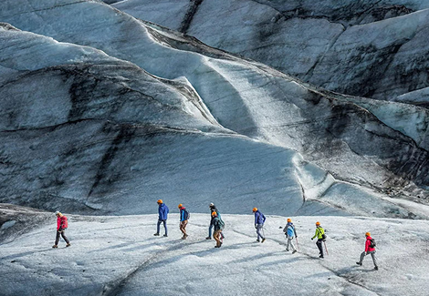
HIKING
-
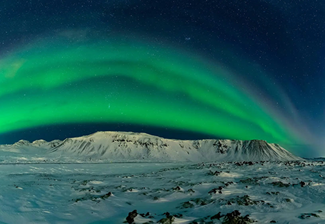
NOTHERN LIGHT
-
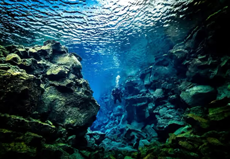
SNORKLING
-
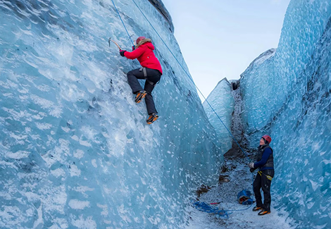
ICE CLIMING
-
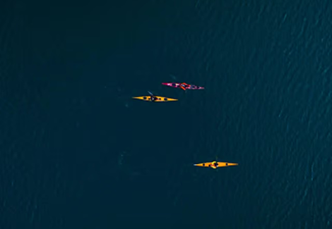
KAYAKING
-
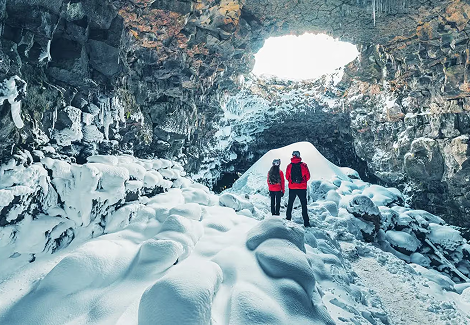
CAVING
-
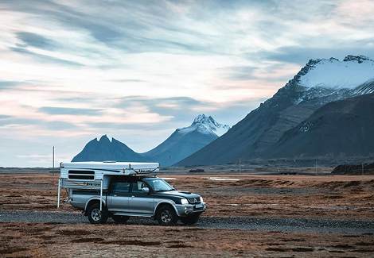
CAMPING
-
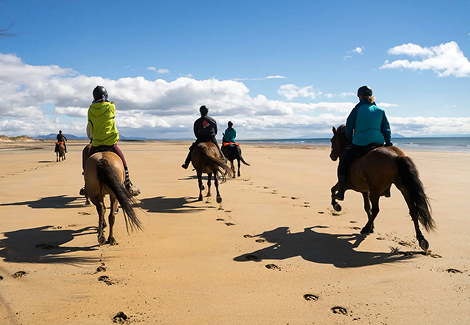
RIDING
-
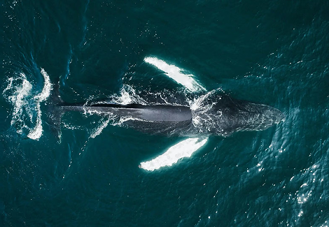
WHALE
more
05MEDIA
Feel the living movement of Iceland, captured in dynamic cinematic motion.
more
06GALLERY
Freeze extraordinary moments of nature, captured through the lens of wonder.
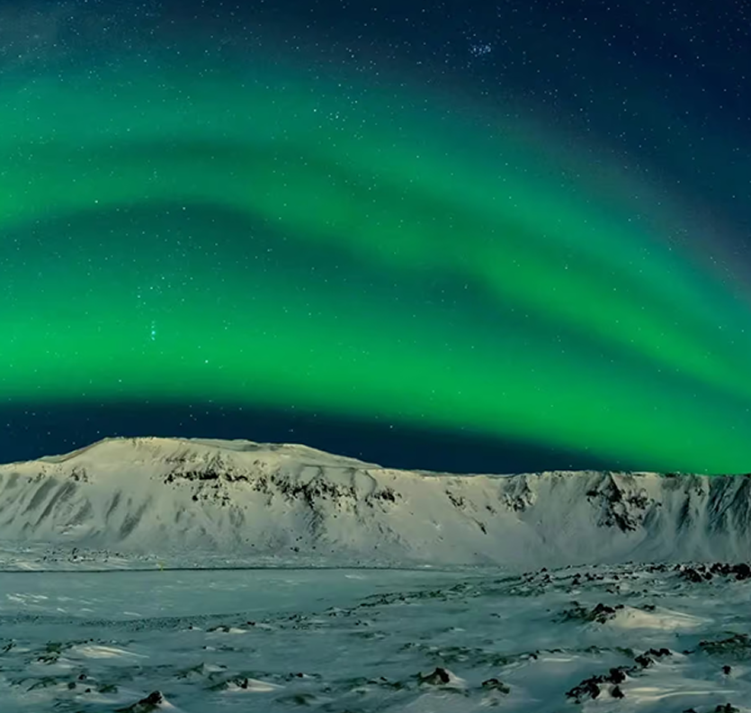
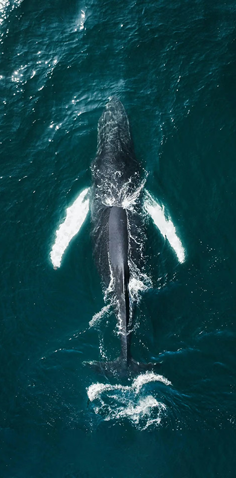
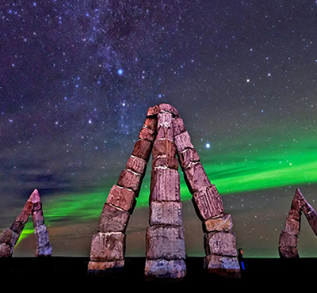
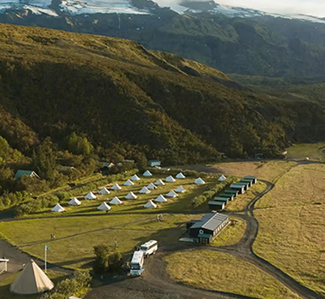
more